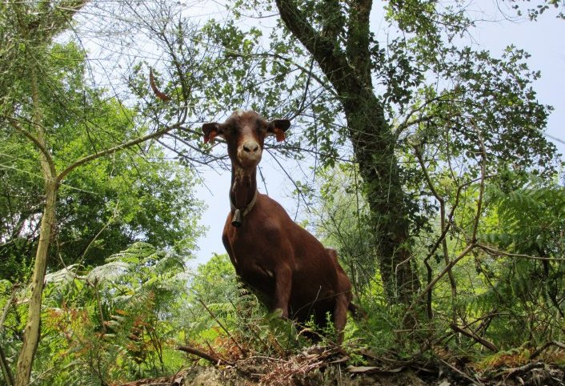
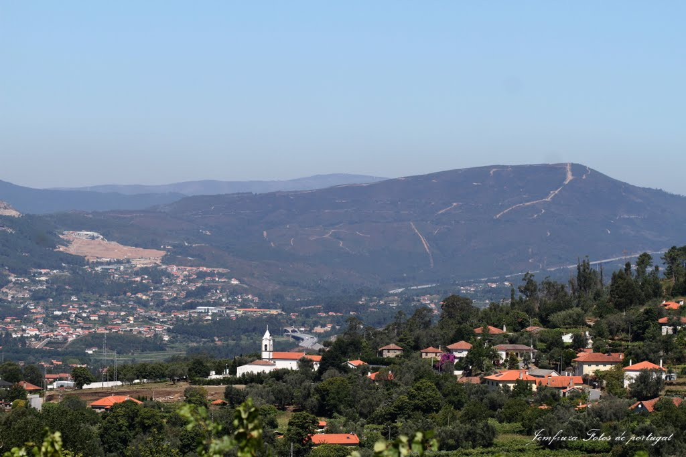

O Percurso do Carvalhal do Trovela é um percurso pedestre denominado de pequena rota. As respetivas marcações e sinalizações obedecem às normas internacionais. O percurso permite percorrer e contemplar uma das maiores manchas de carvalhal existentes no concelho de Ponte de Lima, bem como observar, ouvir e sentir a riquíssima biodiversidade associada.
Trovela
Ponto Turístico

O povoamento do seu território atinge épocas pré-históricas, uma vez que está situado abaixo de um castro que parece ter sido muito importante.
Trata-se de uma povoação fortificada, situada num local de difícil acesso, colinas ou montes, em permanente estado de defesa.
Referida em documentação do século XI (“villa Cersetello” ou “villa Zercedelo”) e nas inquirições do século XIII (‘Cerdedelo”, sabe-se que já no século XII existiam no julgado medieval ou terra de Penela duas paróquias de Serzedelo: A do mosteiro de Santa Marta e a de orago S. João, formando ambas o couto do referido mosteiro, que era demarcado por padrões.
História

A Igreja de Santa Marta e a Capela de S.João, ambas situadas no centro de Serdedelo, são dos poucos Pontos Turísticos que esta pequena freguesia pode oferecer.
Igreja e Capela de S.joão
Ponto Turístico